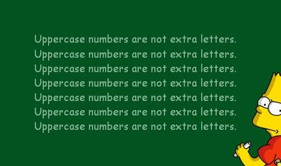
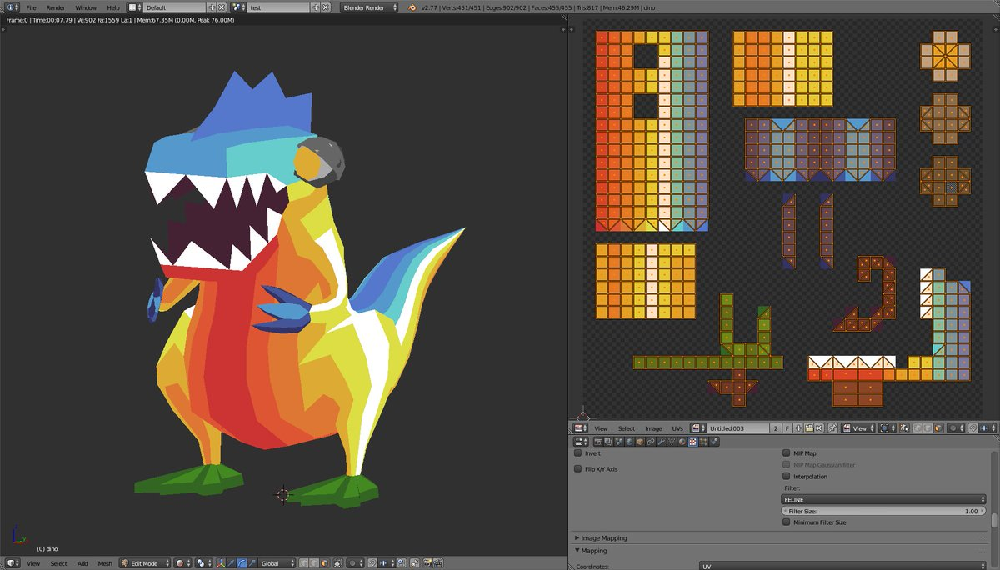
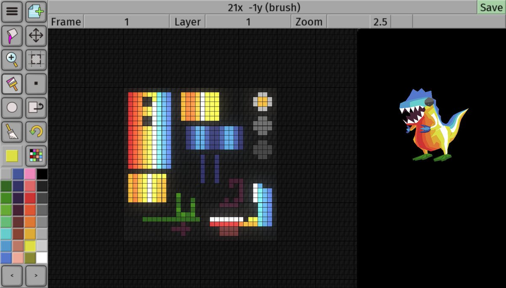
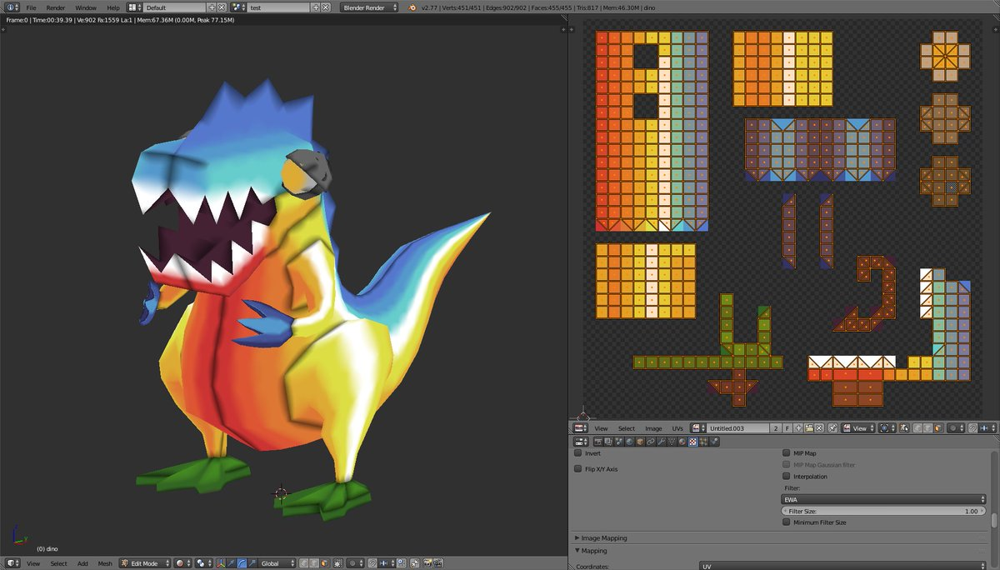

@magic_bane I think i ignored it first time through, apart from some quick suicide runs for items.
https://twitter.com/cdaffara/status/715264142391816192 @cdaffara @webmink This must be called WATER we just need to work out the backronym. Windows API Translation something something...
@el_burro_muerto

https://twitter.com/andrewcrawshaw/status/714938077261729792 @andrewcrawshaw Aww, Shame you wont be around. This years infest looks like a good'un and very local :)
https://twitter.com/StooCambridge/status/714033404371709953 @StooCambridge Yup, thats the one. I believe the technical term is N64ugly. As in "Bro, that map is N64ugly!" #ThisIsHowGameDevsTalk)
https://twitter.com/StooCambridge/status/713651250445856769 @StooCambridge :) The plan is to try a x4 or x8 bigger texture and detailed pixels. Worried that will end up ugly so putting off trying.
Playing with low poly char and 32x32 pixel UV map. That's one pixel per quad. #screenshotsaturday



https://twitter.com/EmmaMBearman/status/712725153914961921 @EmmaMBearman that's for Americans, shouldn't brits move to uhm, Iceland or something?
Interesting, opensourceing a cartoon animation tool.
https://www.youtube.com/watch?v=-jjeh1USIlY
The robotic voice is confusing me.
https://twitter.com/crowbarska/status/711606527757578240 @crowbarska Yup unlike lots of adult swim stuff which does the same thing mostly out of -- I'm going to go with laziness here :)
https://twitter.com/crowbarska/status/711576453645729792 @crowbarska Space Dandy is the Simpsons without the obligatory reset back to normality at the end. I just assume that bit happens off stage.
https://twitter.com/wetgenes/status/710089875589087232 @fasterthanlime I know that's not very node but it will be something like that which is considered "free" on linux.
@fasterthanlime Are you creating lots of processes? windows has a high overhead on that sort of thing, eg 10x slower linuxy makefiles.
@CharlotteGore all moved on technically you can still run all the old demos but nothing new without new hardware for us.
https://twitter.com/wetgenes/status/707633544567382016 We've gone all laptopy you see and all though they have a reasonable bit of oomph the "Optimus" dual card thing they have is a big problem.
Today I took the @Oculus DK1 off the shelf and discovered that we no longer have any hardware capable of supporting its latest drivers...
https://twitter.com/barog/status/707596122697699328 @barog No worries, hope you have a great GDC and to hear about it next month :)
And they said spending the 90s rendering looping under construction GIFs for web pages was a dead end job.